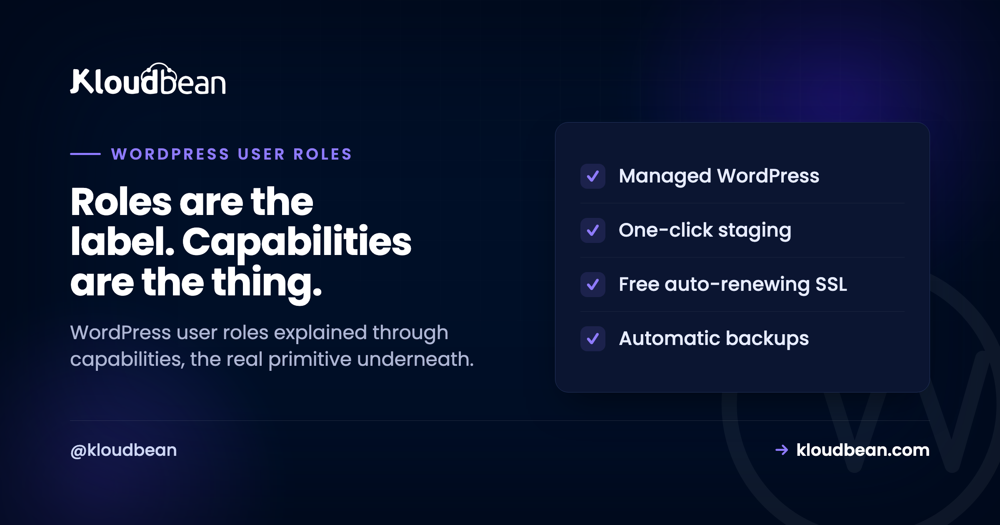
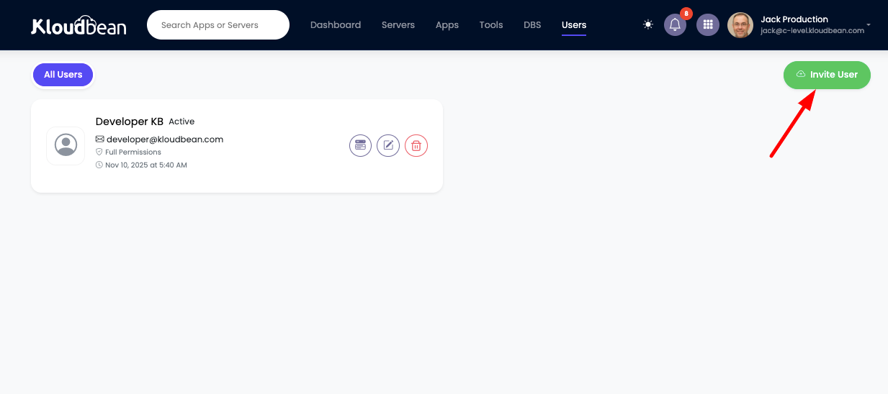
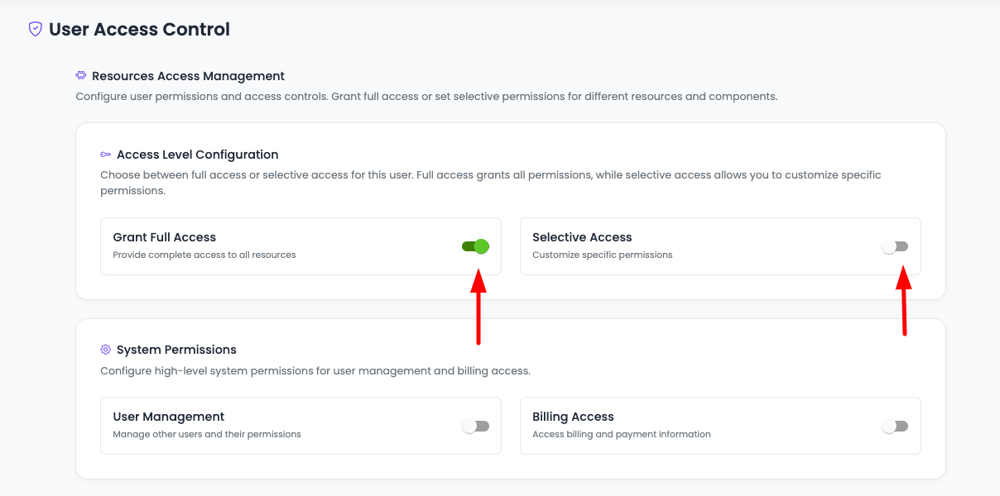

WordPress User Roles: Capabilities, Sharp Edges, and Why Admin Count Is Your Attack Surface

WordPress user roles get taught as five fixed tiers, which is how people end up handing out Administrator because Editor "didn't seem like enough". The tiers are not the model. Underneath, WordPress only ever checks capabilities, individual permissions like publish_posts or install_plugins, and a role is nothing more than a named bundle of them stored in your database. Once you see it that way, the confusing questions stop being confusing: why a Contributor cannot upload an image, why your site Administrator loses the plugin installer on multisite, and why removing a plugin can leave its permissions behind.
A standard WordPress install has five roles: Administrator, Editor, Author, Contributor, and Subscriber, in descending order of what they can do. Multisite adds a sixth, Super Admin, which controls the whole network. Each role is a set of capabilities, and WordPress checks capabilities rather than role names, so you can add or remove individual permissions without inventing a new role. For security, grant the lowest role that lets someone finish their work, and keep the number of Administrators as small as you can.
Roles are bundles, capabilities are the primitive
When a theme or plugin decides whether to show you something, it is not asking "is this person an Editor". It asks whether the current user can do a specific thing, using a check like current_user_can('edit_others_posts').
Roles exist so nobody has to assign several dozen individual permissions per person. Administrator is a bundle containing nearly all of them, Subscriber is a bundle containing almost none, and the three in between are useful staging posts for an editorial workflow.
This matters practically, because it means the answer to "Editor is not quite enough but Administrator is too much" is almost never a new role. It is granting one capability to the Editor role and stopping there.
The five roles, and what each can genuinely do
| Role | Can do | Cannot do |
|---|---|---|
| Administrator | Everything on the site: settings, users, themes, plugins, and code editing | Nothing, on a single site |
| Editor | Write, edit, publish, and delete anyone's posts and pages; moderate comments; manage categories and tags | Touch settings, users, themes, or plugins |
| Author | Write, publish, and delete their own posts; upload files | Touch anyone else's content, or edit pages |
| Contributor | Write and edit their own unpublished drafts | Publish anything, or upload files |
| Subscriber | Manage their own profile, and read | Create content of any kind |
Two boundaries do most of the real work here. The jump from Author to Editor is the jump from "my own content" to "everyone's content", which is a trust decision about editorial judgement. The jump from Editor to Administrator is entirely different in kind: it is the jump from content to the site's configuration and code. Those are not adjacent steps on one ladder, and treating them as though they are is how sites end up with nine Administrators.
The sharp edges people trip over
A Contributor cannot upload images. This is the single most common complaint, and it is deliberate rather than a bug. Contributors lack upload_files, so a writer who is meant to submit illustrated drafts cannot attach the illustrations. You have two clean options: make them an Author, or grant that one capability to Contributor and leave the rest alone.
// Let Contributors attach media, without making them Authors
function kb_allow_contributor_uploads() {
$role = get_role( 'contributor' );
if ( $role && ! $role->has_cap( 'upload_files' ) ) {
$role->add_cap( 'upload_files' );
}
}
add_action( 'init', 'kb_allow_contributor_uploads' );Authors cannot edit Pages. Posts and pages are separate post types with separate capabilities, and the Author role only covers posts. Someone maintaining your About page needs Editor, or a targeted grant.
An Author can delete their own published work. delete_published_posts sits in the Author bundle. Usually fine, occasionally not what an editorial team expects, and worth knowing before somebody removes a live article.
Nobody can edit an Administrator except an Administrator. Editors cannot manage users at all, so there is no route for an Editor to escalate through the user screen. That is the intended design and it is a good thing.
Multisite changes the rules, quietly
If you run a network, the role model shifts in a way that surprises people, and the surprise is usually a support ticket that reads "the plugins menu disappeared".
Multisite introduces Super Admin, who administers the entire network. Crucially, it also takes capabilities away from ordinary site Administrators: installing plugins and editing themes become network-level powers. So an Administrator on a single site is meaningfully more powerful than an Administrator of one site inside a network.
That is the correct design. A network exists precisely so that individual site owners cannot install arbitrary code that runs on shared infrastructure. If you are moving a standalone site into a network, expect that conversation. Our multisite hosting guide covers the operational side.
Your Administrator count is your attack surface
Here is the argument I would make to any site owner, and it is not really about roles at all.
An Administrator can install plugins. Installing a plugin means running arbitrary PHP on your server. So every Administrator account is, in security terms, a route to code execution on the machine hosting your site. Not a route to editing content. A route to running code.
That reframes the arithmetic. Ten Administrators means ten passwords, ten devices, and ten inboxes, any one of which can be phished or reused from a breached service, and any one of which leads to the same outcome. Compromising an Editor gets someone your content. Compromising an Administrator gets someone your server.
So the practical rules are unglamorous and effective. Grant the lowest role that lets the person finish their work, and if you catch yourself thinking "just make them an admin for now", that is the moment to check which single capability is actually missing. Audit the Administrator list on a schedule, because these accounts accumulate through agency handovers and one-off favours and nobody ever removes them. Remove leavers rather than only changing their password. And treat "an Administrator account exists that nobody can account for" as an incident, not an oddity.
Two hardening moves worth pairing with this. Disable the built-in file editor, which lets an Administrator rewrite theme and plugin PHP straight from the dashboard, so a stolen session becomes immediate code execution with no upload needed:
// wp-config.php
define( 'DISALLOW_FILE_EDIT', true );And put multi-factor authentication on every account that can reach the dashboard, prioritising Administrators. Neither of these is exotic and both remove a large share of the realistic paths in. Our secure WordPress hosting guide covers how sites actually get compromised, and the answer is rarely anything clever.
One capability that deserves a warning: unfiltered_html
Worth separating out because it is powerful and almost nobody knows they have granted it.
unfiltered_html allows a user to save raw HTML without WordPress sanitising it, including <script> tags. On a single-site install, Administrators and Editors hold it. That means an Editor, a role people hand out freely as "just content", can insert JavaScript that runs for every visitor.
On multisite, WordPress removes it from everyone except Super Admins, which tells you how the project itself views the risk. If you have Editors who do not need to paste embed codes, removing this capability is a reasonable and rarely disruptive tightening.
// Take raw HTML away from Editors
function kb_restrict_editor_html() {
$role = get_role( 'editor' );
if ( $role ) {
$role->remove_cap( 'unfiltered_html' );
}
}
add_action( 'init', 'kb_restrict_editor_html' );Roles live in your database, not your code
This is the detail that explains a whole class of confusing behaviour, and it is genuinely under-known.
Role definitions are stored in the wp_options table, under a key ending in user_roles. They are not read from PHP files on each request. So when a plugin calls add_cap() or add_role(), it writes into your database, and that change persists.
Two consequences follow. Removing a plugin does not necessarily remove the capabilities or custom roles it created, so permissions can outlive the code that justified them, and a membership plugin you trialled two years ago may still be shaping who can do what. And running add_cap() on every page load, which plenty of tutorials suggest, means a database write on every request; it belongs in an activation hook or behind a check like the one above.
It also means role changes are part of your database, so they travel with a database migration and are covered by a database backup rather than a file backup. If you are moving a site, that is one less thing to worry about, and it is also why a database restore can silently revert a permission change you made last week.
Inspecting and changing roles without guessing
The dashboard shows you role names. It does not show you capabilities, which is why permission debugging in the admin UI is frustrating. WP-CLI does, and it turns this into a quick job.
# What roles exist on this site
wp role list
# Exactly what a role can do
wp cap list editor
# Who holds which role
wp user list --fields=ID,user_login,roles
# Find every Administrator, which is the audit you should run
wp user list --role=administrator --fields=ID,user_login,user_email
# Change one person's role
wp user set-role 12 editor
# Grant one capability rather than promoting someone
wp cap add editor manage_categoriesThat fourth command is the one to run today. On most sites that have existed for a few years and been touched by more than one person, the Administrator list contains at least one account nobody remembers creating. Our WP-CLI guide covers the wider toolkit, and any of these changes belongs on a staging copy first if the site is busy.
WordPress roles are not hosting permissions
Worth being explicit about, because conflating these two layers is a common and consequential mistake.
WordPress roles govern what someone can do inside the CMS: content, settings, plugins. They say nothing about the server. A WordPress Administrator has no inherent access to your server, your database credentials, your backups, or your DNS. Those live at the hosting layer and are controlled separately.
The mistake runs in both directions. Someone needs to check a plugin update, so they are made a WordPress Administrator when Editor plus one capability would have done. Or a contractor needs to look at one site, so they are given the hosting login that reaches every site on the account.
On Kloudbean the hosting layer has its own model: subusers with User Access Control, where permissions are granular per resource and per action. A developer can be given access to one application on one server without being able to see the rest, and access is revoked cleanly when the work ends rather than by rotating a shared password. There is also a Basic Auth gate you can put in front of an application, which is the right tool for keeping a client preview private, and IP access control to allow or deny by address or CIDR range. On enterprise accounts an audit trail records account-wide activity in an immutable, searchable log with CSV export.
Keeping the layers separate is the habit worth building: CMS roles for content decisions, hosting permissions for infrastructure. Someone who writes blog posts should never need either the server or the plugin installer. Our agency WordPress hosting guide goes deeper on running this across a fleet of client sites.



More on WordPress User Roles
On locking a site down, secure WordPress hosting and the server hardening checklist. On testing changes safely, staging environments and backups. On doing this at the command line, the WP-CLI guide. For fleets and networks, agency WordPress hosting and multisite hosting. And if granular permissions are a hard requirement for your project, Joomla versus WordPress explains why Joomla's core ACL is a genuine point in its favour.
WordPress, without the server admin.
The stack, the patching, SSL, and backups are handled, so your work stays on the site rather than the box. Staging is one click, and the managed database sits right next to the app.
- ✓ Managed WordPress stack
- ✓ One-click staging
- ✓ Managed MySQL and MariaDB
- ✓ Automatic backups
- ✓ Free SSL
- ✓ Built-in load balancer
Plans from $8/mo · Free migration assistance · Free trial
FAQ
What are the WordPress user roles?
Administrator, Editor, Author, Contributor, and Subscriber on a standard install, in descending order of permissions. Multisite adds Super Admin for the whole network. Each is a named bundle of capabilities, and WordPress checks capabilities rather than role names when deciding what someone may do.
What is the difference between an Author and a Contributor?
An Author can publish their own posts and upload files. A Contributor can only write drafts, cannot publish, and cannot upload files, so their work has to be published by someone else. That upload restriction is the usual sticking point, since a Contributor cannot attach images to the draft they are writing.
Why can't my Contributor upload images?
The Contributor role does not include the upload_files capability, by design. Either promote them to Author, or grant that single capability to the Contributor role and leave everything else unchanged. The second option is usually the better fit when you want submitted drafts to stay unpublished.
What is the difference between a role and a capability?
A capability is a single permission such as publish_posts or install_plugins. A role is a named collection of capabilities. WordPress only ever checks capabilities, so if a role is almost right you can add or remove one capability rather than creating a new role.
How many Administrators should a WordPress site have?
As few as the work genuinely requires, often one or two. An Administrator can install plugins, which means running arbitrary code on your server, so each additional Administrator is another account whose compromise leads to server access rather than just content changes. Audit the list periodically, because these accumulate through handovers and nobody removes them.
Can an Editor break my site?
Not through settings, themes, or plugins, which Editors cannot touch. But on a single-site install Editors hold unfiltered_html, so they can save raw HTML including script tags that run for every visitor. If your Editors do not need to paste embed codes, removing that capability is a sensible tightening.
Where are WordPress roles stored?
In the database, in the wp_options table under a key ending in user_roles, rather than in PHP files. That is why a plugin can permanently alter your roles, why those changes can outlive the plugin's removal, and why role changes are captured by a database backup rather than a file backup.
Do I need a plugin to manage user roles?
Not for adding or removing individual capabilities, which is a few lines of code or one WP-CLI command. A role management plugin is worth it if you need a visual editor, many custom roles, or non-technical people making these changes. Bear in mind that a plugin writes its changes into your database, so they persist after you remove it.
Does a WordPress Administrator have server access?
No. WordPress roles only govern the CMS, so an Administrator has no inherent access to your server, database credentials, backups, or DNS. Those are controlled at the hosting layer with separate accounts and permissions, and keeping the two layers distinct is what stops a content request turning into infrastructure access.